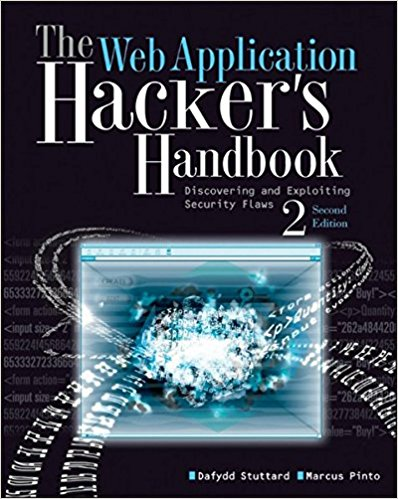
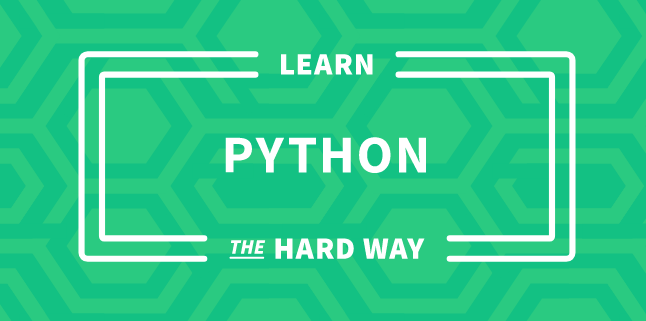

In order to get better as a hunter, it is vital that you learn various bug bounty techniques. One way of doing this is by reading books. This page covers a number of books that will introduce you to the basics of security and bug bounty hunting.
This book by Peter Yaworski really highlights the type of vulnerabilities most programs are looking for. Peter uses real-world reports and breaks them down into simple bit-sized chunks that make understand the report so much easier.
"On December 22, 2015, Twitter paid over $14,000 to ethical hackers for exposing vulnerabilities. This wasn't a shakedown. Sites like Twitter, Shopify, Dropbox, Yahoo, Google, Facebook and more, ask ethical hackers to report security bugs and pay them. This book will teach you how you can get started with ethical hacking."Read now →
"Learning the Ropes 101" is a well-written and cleverly structured book on information security. Andy takes their time to touch on numerous topics that pentesters and bug bounty hunters will encounter while conducting research.
"All of the basic topics to get you from zero to junior pentester level - covering off everything you need to know to start breaking into web application penetration testing industry or looking for flaws on bug bounties. (LTR101)"Read now →
Most bug bounty hunters and member of the information security industry suggest reading this book to get your feet wet.
"Web applications are the front door to most organizations, exposing them to attacks that may disclose personal information, execute fraudulent transactions, or compromise ordinary users. This practical book has been completely updated and revised to discuss the latest step-by-step techniques for attacking and defending the range of ever-evolving web applications. You'll explore the various new technologies employed in web applications that have appeared since the first edition and review the new attack techniques that have been developed, particularly in relation to the client side." Read now →
Although, cryptography is not a common area that hunters focus on, for those interested in the basics of crypto, this book is a great starting point.
"Crypto 101 is an introductory course on cryptography, freely available for programmers of all ages and skill levels."Read now →
There are a variety of tools and utilities on Linux that you will need to be familiar with while hunting. Linux Journey has a variety of Linux-introductory courses with bite-sized chapters for everyone to enjoy.
"Learn the ways of Linux-fu, for free."Read now →
I usually tell hunters to learn Python first when they start learning to code. This is the book that helped me a lot understand the basic principles of coding and the Python language.
"Learn Python The Hard Way takes you from absolute zero to able to read and write basic Python to then understand other books on Python. No experience necessary to begin, and you can even try the book out for free to see if the method works for you. If you've always wanted to learn to code but have no idea where to begin, then this book is for you." Read now →